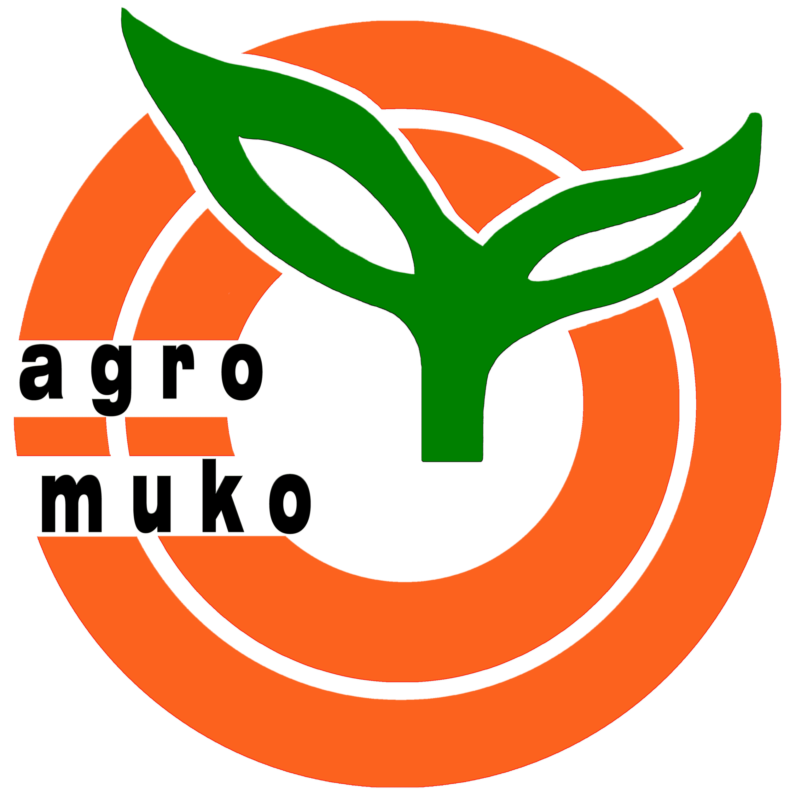

Rekapitulasi & Analisis Data
Pengolahan dan pembersihan ribuan data operasional harian menggunakan formula Microsoft Excel (XLOOKUP & Pivot Table).
Lulusan Administrasi Publik Universitas Andalas dengan pengalaman di PT Agro Muko dan sertifikasi Microsoft 365. Saya siap membantu pengelolaan administrasi, pengolahan data, serta kebutuhan operasional dengan dukungan teknologi digital dan AI.
Saya Naufal Giovedi Ronswid, Lulusan Administrasi Publik Universitas Andalas dengan pengalaman kerja di PT Agro Muko. Saya berfokus pada bidang administrasi perkantoran, pengelolaan data, dan dukungan operasional untuk memastikan seluruh pekerjaan berjalan rapi, presisi, dan terorganisasi.
Didukung sertifikasi resmi Microsoft 365 serta kecepatan mengetik 110+ WPM, saya selalu mengutamakan ketelitian dan efisiensi waktu. Saya juga aktif memanfaatkan teknologi AI modern untuk mempercepat penyusunan draf dokumen, perangkuman informasi kerja, serta optimalisasi tugas administratif harian.

S1 Administrasi Publik • IPK 3.78 (Cum Laude)
2022 – 2026
Staff Office (Administrasi & Operasional)
2025
Pengelolaan Surat-Menyurat, Arsip & Notulensi
2025
Manajemen Operasional & Koordinasi Pekan Olahraga Mahasiswa
2024Program SDGs No. 8 (Decent Work & Economic Growth)
2023Dukungan Logistik & Kelengkapan Administrasi Kegiatan
2023
Pengolahan dan pembersihan ribuan data operasional harian menggunakan formula Microsoft Excel (XLOOKUP & Pivot Table).

Alur kerja pemanfaatan AI untuk menghasilkan, mengelola, dan memantau draf notulensi serta laporan secara efisien.

Manajemen database dokumen dan data operasional terpusat berbasis cloud untuk memantau data secara cepat dan terstruktur.


Kategori Mahasiswa Universitas Andalas


Jangan ragu untuk berdiskusi tentang peluang kerja sama, proyek freelance, atau sekadar bertukar ide.